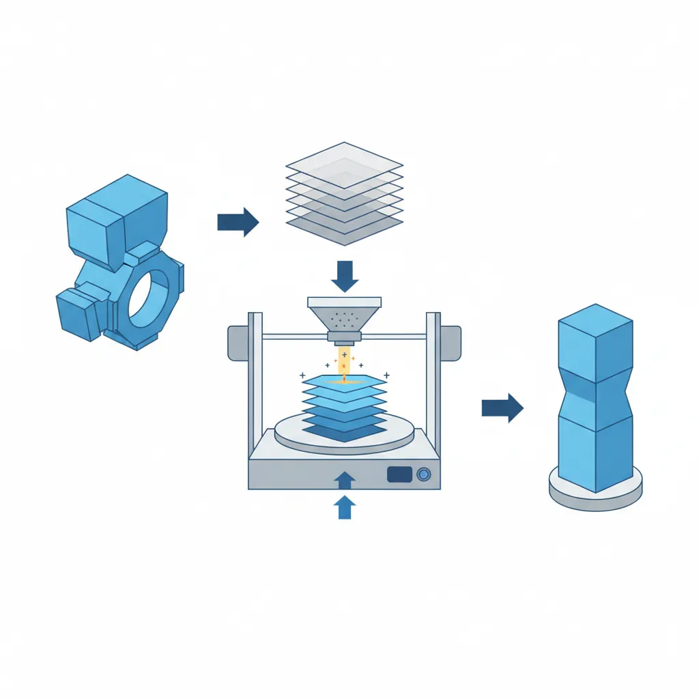
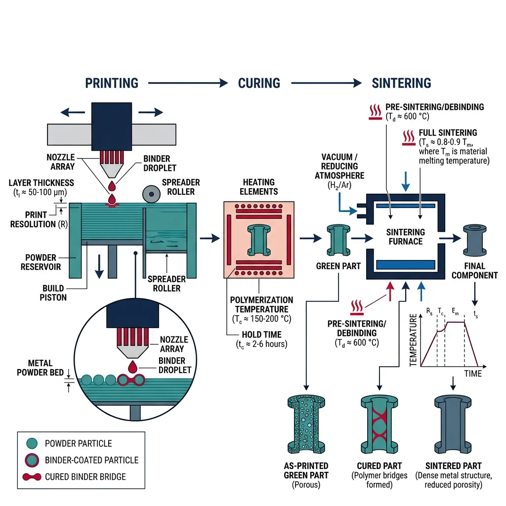
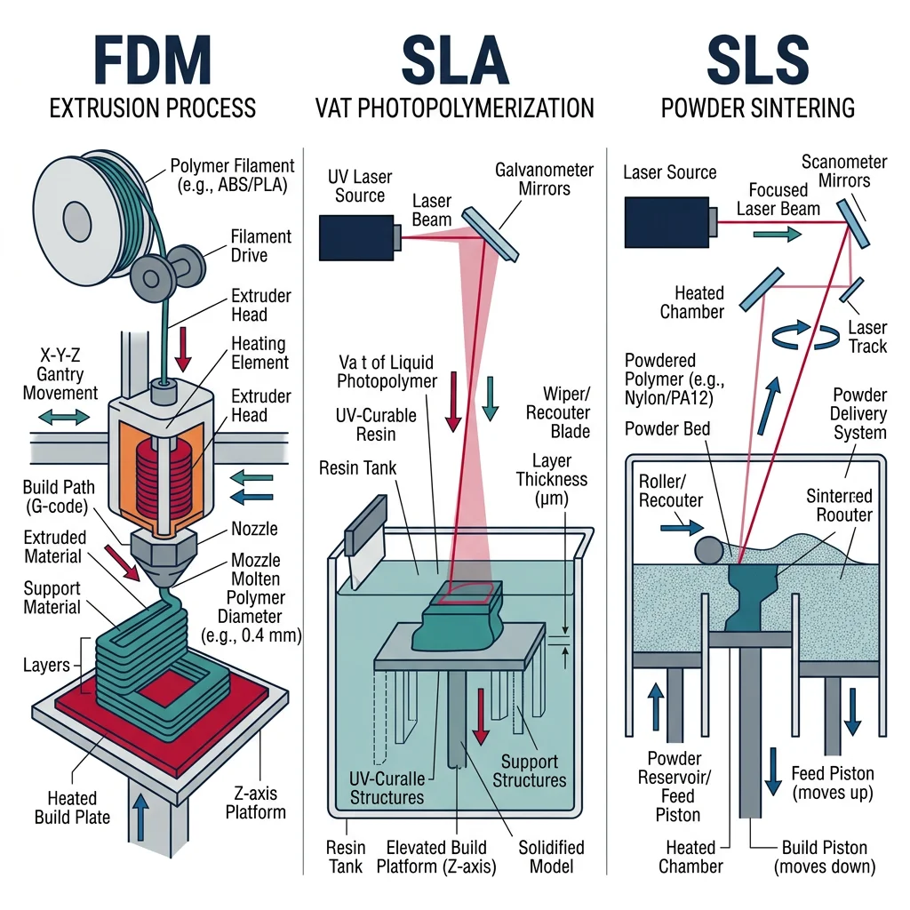
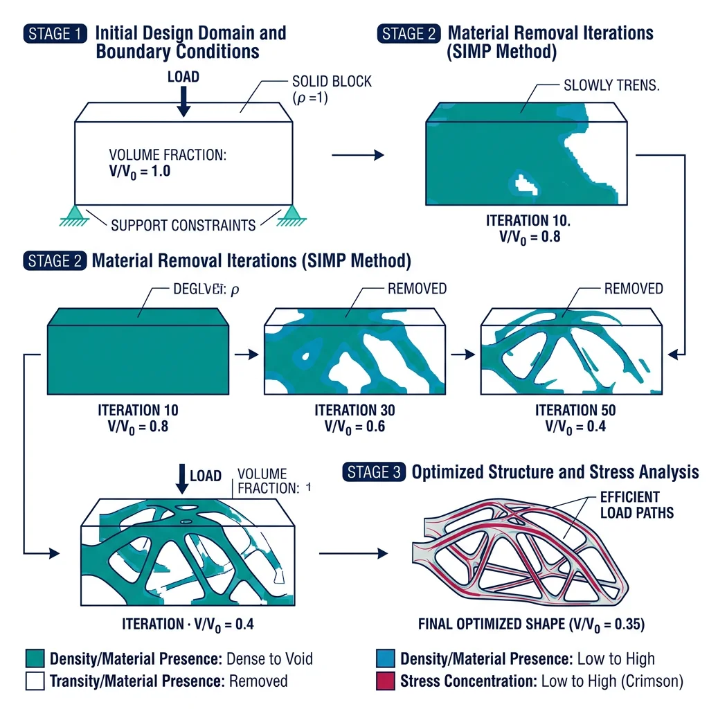
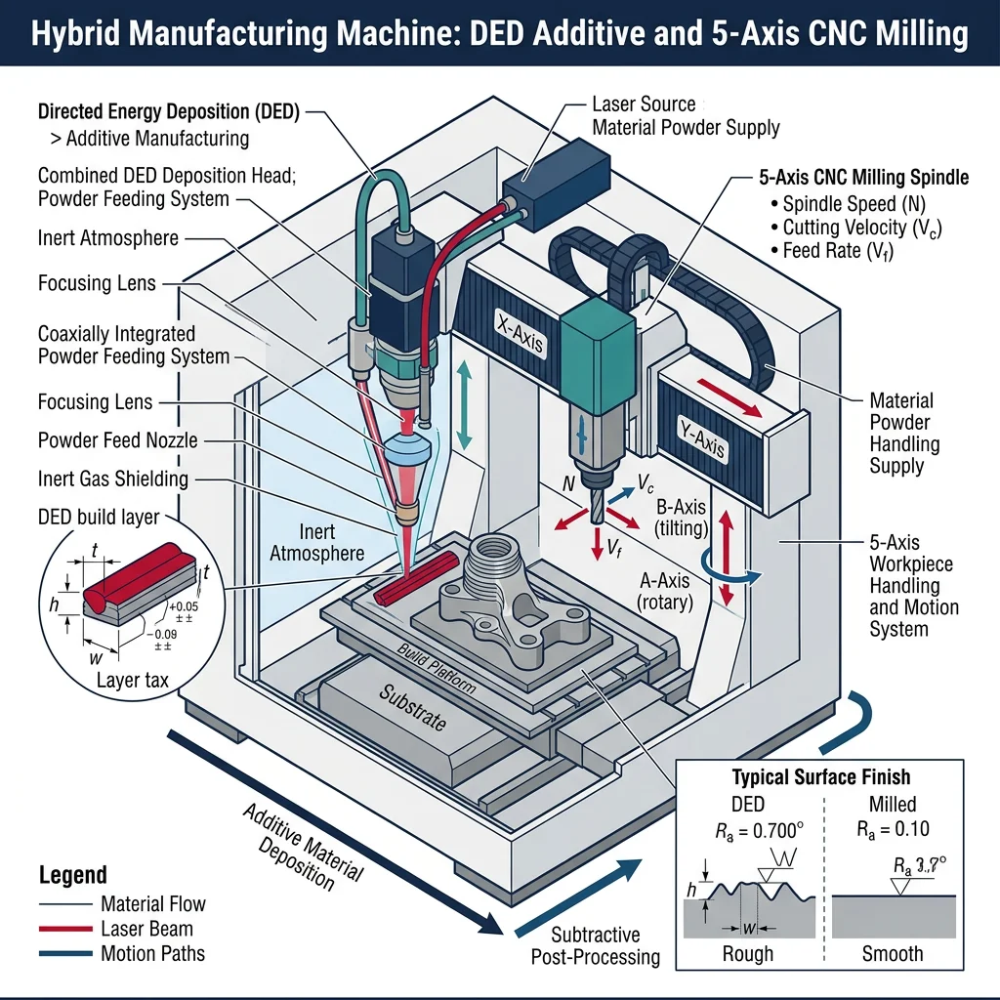

Metal AM Processes
Manufacturing Mastery
Manufacturing Systems & Process Foundations
Process taxonomy, physics, DFM/DFA, production economics, Theory of ConstraintsCasting, Forging & Metal Forming
Sand/investment/die casting, open/closed-die forging, rolling, extrusion, deep drawingMachining & CNC Technology
Cutting mechanics, tool materials, GD&T, multi-axis machining, high-speed machining, CAMWelding, Joining & Assembly
Arc/MIG/TIG/laser/friction stir welding, brazing, adhesive bonding, weld metallurgyAdditive Manufacturing & Hybrid Processes
PBF, DED, binder jetting, topology optimization, in-situ monitoringQuality Control, Metrology & Inspection
SPC, control charts, CMM, NDT, surface metrology, reliabilityLean Manufacturing & Operational Excellence
5S, Kaizen, VSM, JIT, Kanban, Six Sigma, OEEManufacturing Automation & Robotics
Industrial robotics, PLC, sensors, cobots, vision systems, safetyIndustry 4.0 & Smart Factories
CPS, IIoT, digital twins, predictive maintenance, MES, cloud manufacturingManufacturing Economics & Strategy
Cost modeling, capital investment, facility layout, global supply chainsSustainability & Green Manufacturing
LCA, circular economy, energy efficiency, carbon footprint reductionAdvanced & Frontier Manufacturing
Nano-manufacturing, semiconductor fabrication, bio-manufacturing, autonomous systemsAdditive manufacturing (AM) — commonly called 3D printing — builds parts layer by layer from digital models, fundamentally inverting the manufacturing paradigm. While subtractive processes remove material and formative processes reshape it, AM adds material only where needed. This enables geometries that are physically impossible to create by any other method — internal cooling channels, lattice structures, topology-optimized organic shapes, and patient-specific medical implants.

Powder Bed Fusion (PBF) is the dominant metal AM technology. A thin layer of metal powder (20-60 μm particles) is spread across a build platform, and a laser or electron beam selectively melts the powder according to the slice pattern. The platform drops by one layer thickness, fresh powder is spread, and the process repeats — thousands of times.
| PBF Variant | Energy Source | Atmosphere | Layer Thickness | Metals | Key Applications |
|---|---|---|---|---|---|
| SLM / L-PBF | Fiber laser (200-1000W) | Argon or Nitrogen | 20-60 μm | Ti-6Al-4V, 316L SS, AlSi10Mg, Inconel 718, CoCr | Aerospace brackets, dental crowns, mold inserts |
| EBM (Electron Beam) | Electron beam (3-6 kW) | Vacuum (10⁻⁴ mbar) | 50-100 μm | Ti-6Al-4V, TiAl, CoCr-Mo | Orthopedic implants, turbine blades |
| Multi-Laser PBF | 4-12 lasers simultaneously | Argon | 30-60 μm | All L-PBF metals | Large aerospace parts, serial production |
Case Study: GE LEAP Fuel Nozzle — The AM Breakthrough
GE Aviation's LEAP engine fuel nozzle tip is the most famous additive manufacturing success story:
- Before AM: 20 separate parts, brazed and welded together — multiple leak paths, 855g, 10+ manufacturing steps
- After AM: Single monolithic part printed in CoCr alloy — 25% lighter (640g), 5× more durable, internal cooling channels impossible to make conventionally
- Production: 40,000+ nozzle tips printed by 2023 — GE operates 300+ metal AM machines
- Economics: $3 million development cost → $1 billion in value from weight savings across the fleet
Directed Energy Deposition (DED)
Directed Energy Deposition (DED) feeds metal powder or wire into a focused energy beam (laser or electron beam), melting it onto an existing surface. Unlike PBF which builds in a powder bed, DED deposits material at rates of 1-10 kg/hour — 10-50× faster than PBF — making it ideal for large parts, repairs, and adding features to existing components.
Powder-Fed DED (LENS)
Powder streams converge at the laser focal point. Advantages: multi-material capability (change powder mid-build), fine features (0.5mm bead). Used for turbine blade repair — worn blade tips rebuilt with original alloy, saving $10,000+ per blade vs replacement.
Wire-Fed DED (WAAM)
Wire feedstock melted by arc, laser, or electron beam. Advantages: near 100% material utilization, deposition rates up to 10 kg/hr, wire is cheaper than powder. Used for large marine propellers, aerospace structural components, and nuclear vessel components.
Binder Jetting & Metal Injection
Binder jetting deposits a liquid binding agent onto a powder bed — no heat during printing. The "green" part is then cured, debound (binder removed), and sintered in a furnace at 1,200-1,400°C to achieve ~97% density. This decouples the printing and densification steps, enabling much faster build rates.

Polymer & Composite AM
Polymer AM accounts for ~70% of all 3D printing by volume and remains the most accessible entry point into additive manufacturing. From $200 desktop FDM printers to $500,000 industrial SLS systems, polymer AM spans prototyping, tooling, and end-use production.
Material Extrusion (FDM/FFF) heats a thermoplastic filament (PLA, ABS, PETG, nylon, PEEK) through a nozzle and deposits it layer by layer. It's the simplest and most widely used AM process — over 2 million desktop FDM printers sold annually.

| Material | Strength (MPa) | Max Temp (°C) | Print Temp (°C) | Applications |
|---|---|---|---|---|
| PLA | 50-60 | 55 | 200-220 | Prototypes, educational, low-stress models |
| ABS | 35-45 | 95 | 230-250 | Functional prototypes, jigs, fixtures |
| PETG | 45-55 | 80 | 230-250 | Food-safe packaging, medical devices, outdoor parts |
| Nylon (PA12) | 45-85 | 120 | 240-270 | Gears, bearings, snap-fits, living hinges |
| PEEK | 90-100 | 250 | 380-420 | Aerospace brackets, medical implants, oil & gas |
| Carbon Fiber Nylon | 80-120 | 140 | 260-280 | Tooling, fixtures, UAV frames, robotics |
Vat Photopolymerization (SLA/DLP)
SLA (Stereolithography) uses a UV laser to cure liquid photopolymer resin layer by layer, producing parts with the finest detail and smoothest surfaces of any AM process (layer heights of 25-100 μm, features as small as 50 μm). DLP (Digital Light Processing) cures an entire layer at once using a projected UV image, making it faster than SLA for dense part arrays.
Case Study: Align Technology — 500,000 Unique Parts Per Day
Align Technology (Invisalign) operates the world's largest additive manufacturing operation:
- Volume: 500,000+ unique dental molds printed every day — each mold is geometrically different
- Process: SLA prints custom molds → thermoform clear aligners over molds → ship to patients
- Business impact: AM enables mass customization — every product is unique but produced at mass-production economics ($1-2 per mold)
- Why AM? Traditional mold-making would require a unique injection mold for each patient ($5,000-10,000). AM makes individual customization economically viable.
Continuous Fiber & Composite Printing
Continuous fiber reinforced AM embeds continuous carbon fiber, fiberglass, or Kevlar strands within a thermoplastic matrix during extrusion. The result: printed parts with aluminum-like strength at 40% of the weight. Companies like Markforged and Anisoprint lead this technology.
Design for AM & Optimization
Design for Additive Manufacturing (DfAM) is fundamentally different from Design for Machining or Design for Casting. AM removes traditional manufacturing constraints — but introduces new ones. The designer's challenge shifts from "what can I make?" to "what's the optimal shape?"

| DfAM Principle | Description | Traditional Constraint Removed |
|---|---|---|
| Topology optimization | Algorithm removes material where stress is low, keeps material where needed | Parts no longer limited to prismatic shapes |
| Part consolidation | Combine multiple assembled parts into one printed part | No assembly labor, no fastener holes, no leak paths |
| Internal channels | Create complex cooling, hydraulic, or pneumatic channels inside parts | No drilling or EDM required for internal features |
| Lattice structures | Replace solid interiors with lightweight lattice or foam structures | Material only where structurally needed |
| Build orientation | Orient part for minimum supports, best surface quality, optimal grain structure | New constraint unique to AM |
Lattice Structures & TPMS
Lattice structures replace solid geometry with repeating unit cells — strut-based (BCC, FCC, octet-truss) or surface-based (TPMS: gyroid, diamond, Schwarz-P). These achieve 80-90% weight reduction compared to solid material while maintaining structural integrity.
TPMS (Triply Periodic Minimal Surfaces) are mathematically defined surfaces with zero mean curvature — they're self-supporting (no AM support structures needed), have excellent load distribution, and provide high surface area ideal for heat exchangers and bone implant osseointegration.
import numpy as np
# Lattice Structure Property Estimation
# Gibson-Ashby Scaling Laws for cellular solids
# E*/Es = C1 * (rho*/rhos)^n (Young's modulus)
# sigma*/sigma_s = C2 * (rho*/rhos)^m (Yield strength)
# Constants for different lattice types
lattices = {
"BCC (strut)": {"C1": 0.3, "n": 2.0, "C2": 0.3, "m": 1.5},
"Octet-truss (strut)": {"C1": 0.3, "n": 1.0, "C2": 0.5, "m": 1.0},
"Gyroid (TPMS)": {"C1": 0.4, "n": 1.7, "C2": 0.4, "m": 1.4},
"Diamond (TPMS)": {"C1": 0.35, "n": 1.8, "C2": 0.35, "m": 1.5},
}
# Base material: Ti-6Al-4V
E_s = 114 # GPa (solid modulus)
sigma_s = 880 # MPa (solid yield strength)
rho_s = 4430 # kg/m³ (solid density)
relative_densities = [0.10, 0.15, 0.20, 0.30, 0.40]
print("Lattice Structure Properties — Ti-6Al-4V")
print("=" * 80)
for name, params in lattices.items():
print(f"\n--- {name} ---")
print(f"{'ρ*/ρs':<8} {'ρ* (kg/m³)':<12} {'E* (GPa)':<12} {'σ* (MPa)':<12} {'Weight saving'}")
print("-" * 60)
for rd in relative_densities:
E_star = params["C1"] * rd**params["n"] * E_s
sigma_star = params["C2"] * rd**params["m"] * sigma_s
rho_star = rd * rho_s
saving = (1 - rd) * 100
print(f"{rd:<8.2f} {rho_star:<12.0f} {E_star:<12.2f} {sigma_star:<12.1f} {saving:.0f}%")
print(f"\nDesign Rule: Octet-truss lattices are stretch-dominated (n=1)")
print(f"→ Linear stiffness scaling → best for structural applications")
print(f"TPMS lattices are self-supporting → no AM support structure needed")
Post-Processing & Qualification
AM parts rarely come off the machine ready for service. Post-processing often accounts for 30-60% of total part cost and includes:
| Post-Processing Step | Purpose | Typical Process |
|---|---|---|
| Support removal | Remove build supports | Wire EDM, CNC machining, manual break-off |
| Stress relief | Reduce residual thermal stresses | Heat treatment (600-700°C for Ti, 1065°C for Inconel) |
| HIP (Hot Isostatic Pressing) | Close internal porosity, improve fatigue life | 100 MPa argon, 900-1,200°C, 2-4 hours |
| Surface finishing | Improve surface roughness (as-built Ra 6-15μm) | CNC machining, shot peening, electropolishing |
| Inspection | Verify internal quality | CT scanning (100% for aerospace), tensile testing |
Hybrid & Frontier AM
Hybrid manufacturing combines additive and subtractive processes in one machine — typically a 5-axis CNC machining center with a DED deposition head. This enables building complex features additively, then machining critical surfaces to tolerance — all in a single setup.

In-Situ Monitoring & Quality
Quality assurance is the biggest barrier to AM adoption in safety-critical industries. Unlike casting or forging (with 100+ years of quality history), AM parts can contain defects — porosity, lack-of-fusion, cracking — that vary from build to build, machine to machine, and even within a single part.
In-Situ Monitoring Technologies
- Melt pool monitoring: High-speed cameras (20,000+ fps) and photodiodes track melt pool size, temperature, and emissions — deviations indicate porosity or incomplete fusion
- Layer-wise imaging: Camera captures each completed layer; AI algorithms compare against expected geometry to detect delamination, warping, and recoater defects
- Acoustic emission: Microphones detect spatter, keyhole collapse, and cracking events in real-time
- Thermal imaging: IR cameras map temperature distribution to detect hot spots (over-melting) and cold spots (lack-of-fusion)
Goal: Build a "digital birth certificate" for every AM part — a complete record of process parameters and sensor data at every voxel, enabling certification without destructive testing.
Multi-Material & 4D Printing
Multi-material AM deposits different materials within the same part — grading composition from one alloy to another (functionally graded materials, FGMs). Example: rocket nozzle inner liner in copper alloy (thermal conductivity) grading to nickel superalloy outer jacket (strength) — no joint, no braze, continuous gradient.